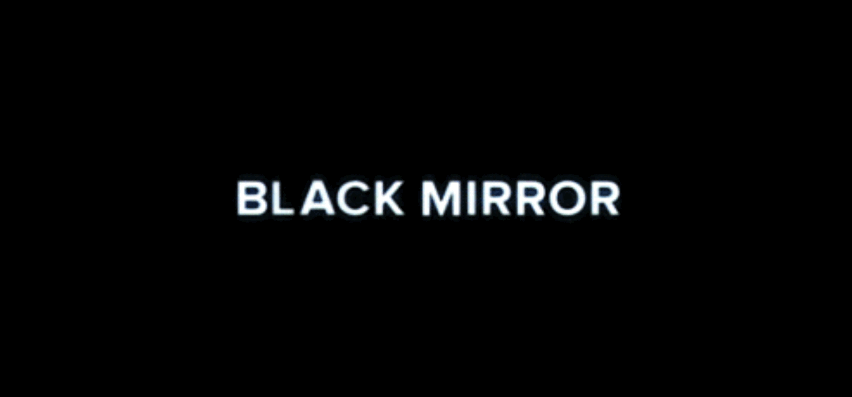
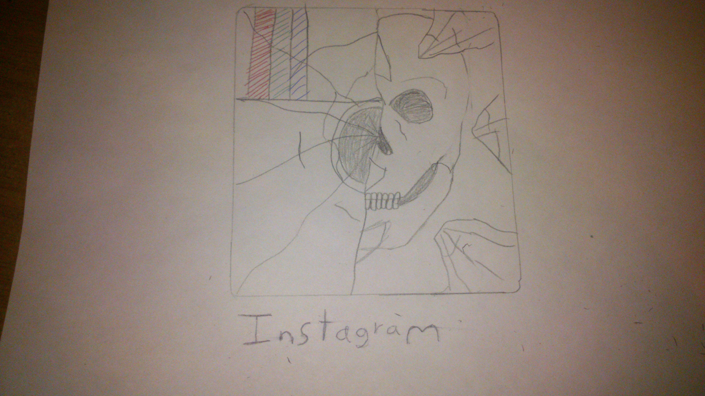

Questions

Should we have an opinion, a belief or knowledge about limits of technology? Why?
Yes, in this case the Nousdive episode show use how social media can control our lives and how can they become our enemy.
Do you think that technology improves or inhibits our knowledge tools and skills? Why?
The tecnology improves us... and inhibits. If use thecnology for with caution and only in reallly need cause it will be posible, but if we abuse we will fail

Video
Logo
